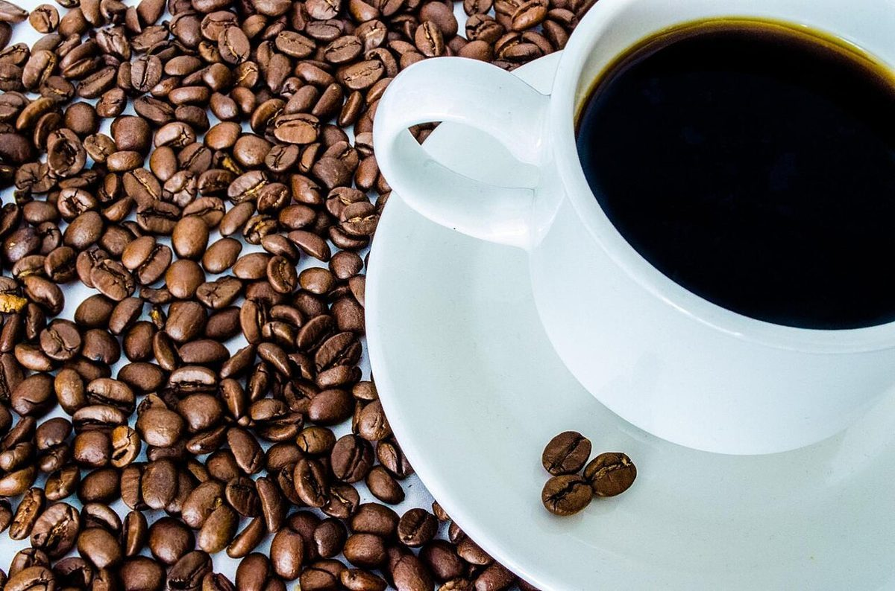

店のこと
店のこと
お店について確認できているのは、所在地・電話番号・Instagramのアカウントです。
このページの「想像してみる」部分は、制作側が想像して書いたものです。お店の実際の様子・考え・メニューとは関係がありません。
確認できていること
- 店名は「cafe nico Lodge」、業種はカフェ
- 所在地は北海道北見市仁頃町２３２(〒090-0003)
- 電話番号は090-9088-7792
- Instagramは @nico_lodge
- 営業時間・定休日・メニュー・価格・ご予約・駐車場は準備中
営業時間などが分かり次第、このサイトに反映します。
想像してみる
二つを継ぐ、というイメージ
「ニコイチ」は、二つのものを継いで、ひとつにすること。制作側は、そんな言葉の響きから、色や形の違うものがひとつに収まる様子を思い浮かべました。実際のお店の姿ではなく、制作側の連想です。
No.05

左豆の上のコーヒーカップ。
右レンガのかまどの炎。